| Услуга | ДентАРИЗ | Миллидент | Эксклюзив-Дент | Городская | Ортус |
|---|---|---|---|---|---|
| Цифровая гнатология | ✅ | ✅ | ✅ | ❌ | ✅ |
| Наркоз · седация | ✅ | ✅ | ✅ | ✅ | ⚠️ |
| Пародонтология | ✅ | ✅ | ✅ | ✅ | ✅ |
| Своя ЗТЛ | ✅ | ✅ | ✅ | ✅ | ✅ |
| Полный комплекс | ✅ | ✅ | ✅ | ✅ | ✅ |
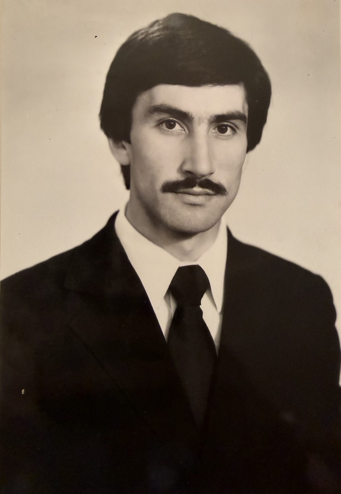
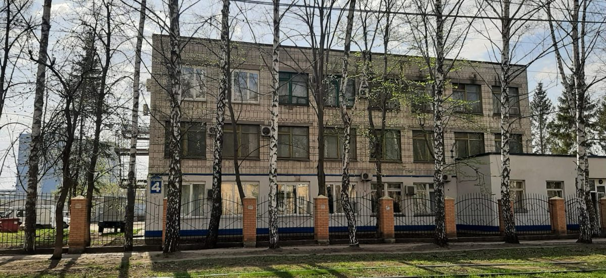
24 апреля 1994 года врач-стоматолог Айнетдинов Закярья Нариманович (1958 г.р.), выходец из деревни Кармалей Ульяновской области, открыл в Ульяновске на ул. Станкостроителей первый частный стоматологический кабинет в городе.
С него началась семейная стоматологическая династия, продолжением которой стала сеть «ДентАРИЗ» в Казани.
Филиал «Серова» — 9 кресел; филиал «Чистопольская» — 4 кресла. Колл-центр, маркетинг и HR частично централизованы — задел под управляющую компанию.
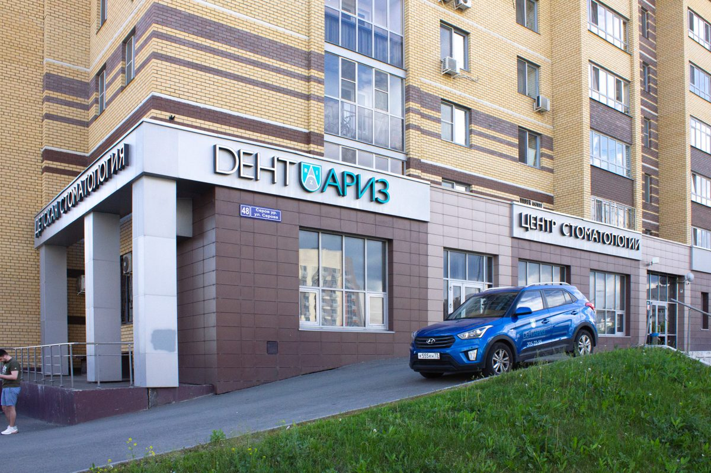
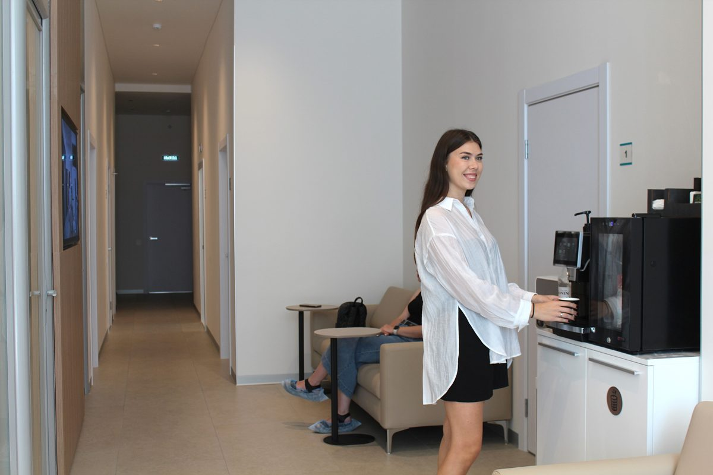
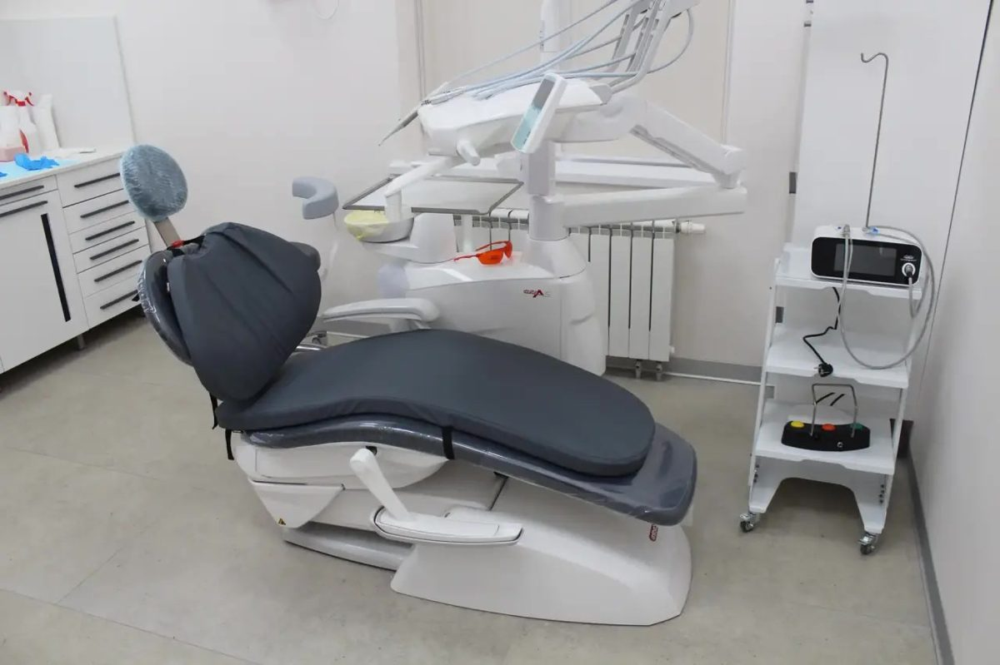
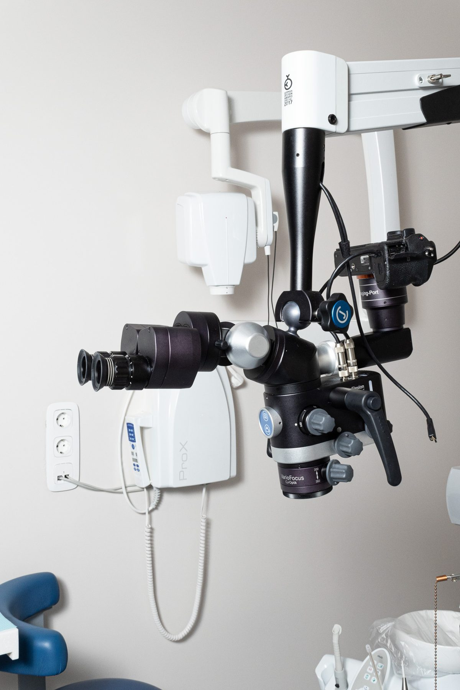
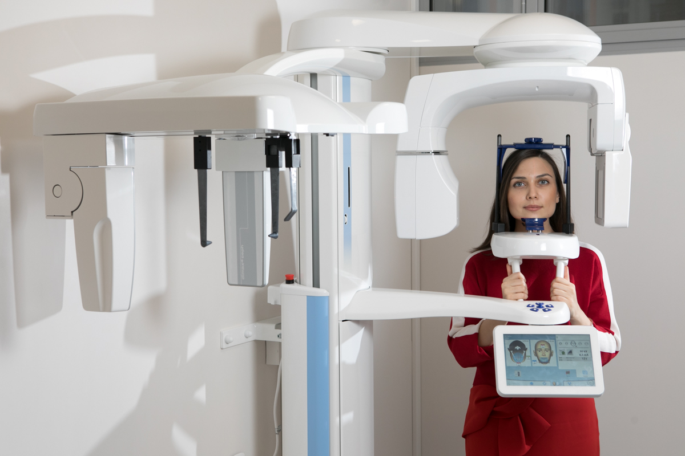
Премиум-оснащение действующих филиалов: операционные микроскопы (CJ-Optik), КТ-диагностика (Planmeca), современные стоматустановки. Стандарт оснащения, тиражируемый в типовой филиал.
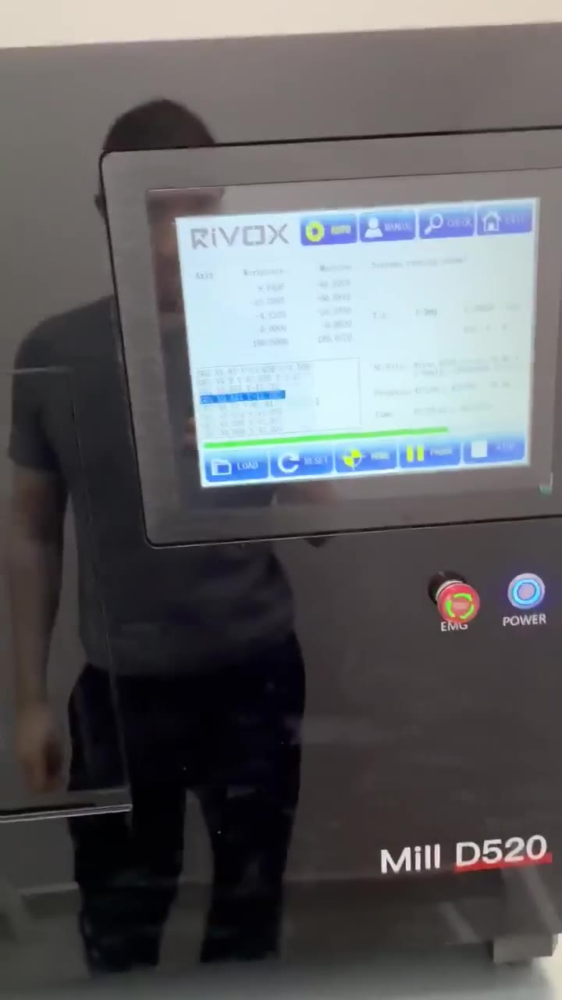
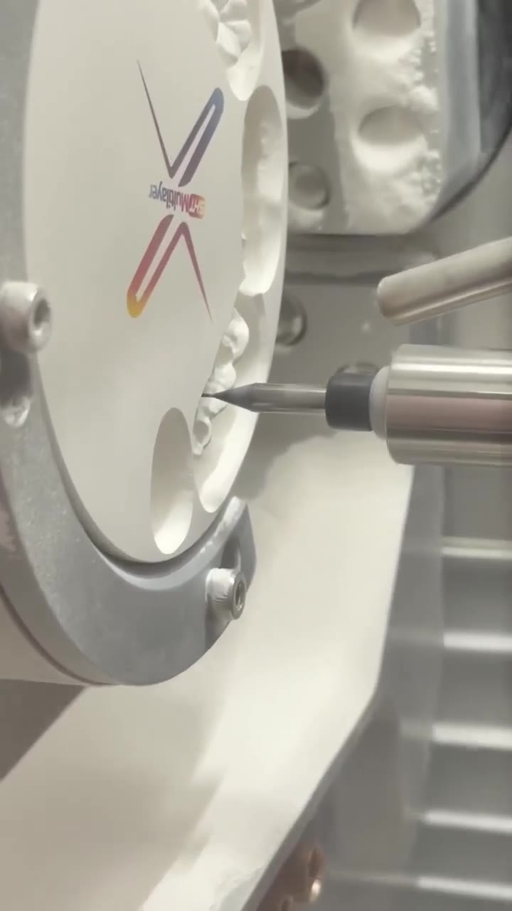
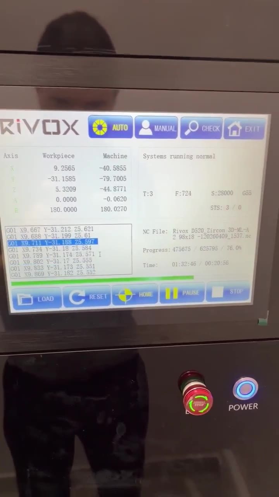
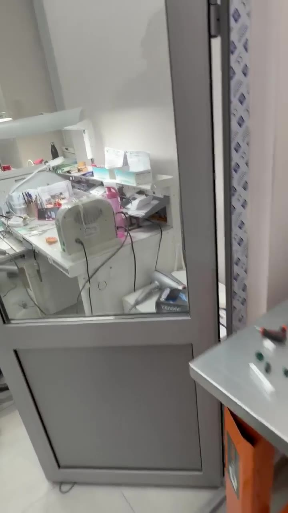
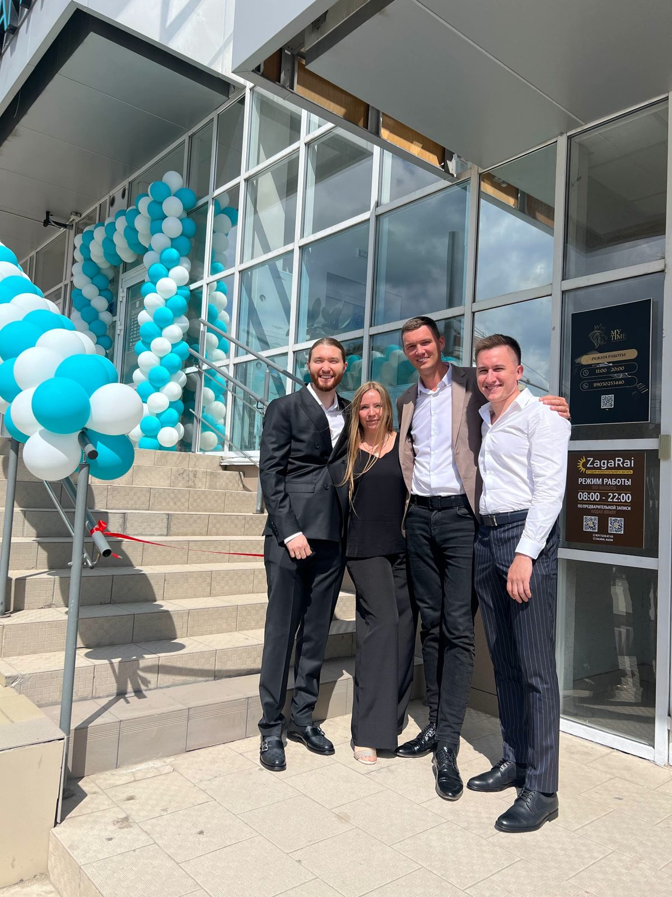
Команда уже открыла и быстро вывела на загрузку второй филиал. Отлаженный механизм «группы запуска» из опытных врачей.
Медицинская деятельность лицензируется (Положение о лицензировании меддеятельности, пост. Правительства РФ № 852 от 01.06.2021). Требования к помещению, оборудованию и квалификации персонала.
СанПиН 2.1.3678-20 — к организациям, осуществляющим медицинскую деятельность.
Освобождение от НДС по медуслугам (ст. 149 п. 2 НК РФ). Ставка 0% налога на прибыль для медорганизаций (ст. 284.1 НК РФ) при выполнении условий: доля медицинских доходов ≥ 90%, штат, численность сертифицированного персонала.
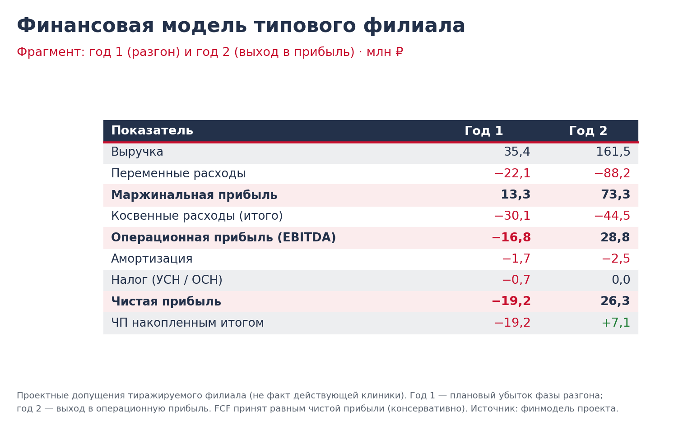
| Риск | Мера управления |
|---|---|
| Кадровый дефицит врачей | Найм через УК, «группа запуска», наставничество |
| Переоценка спроса / загрузки | Анализ ёмкости локации до открытия, поэтапный разгон |
| Кассовый разрыв на разгоне | Резерв оборотных средств в инвестициях |
| Потеря управляемости | Единый учёт и KPI, контроль качества в УК |
| Качество в новом филиале | Стандарты, NPS, рейтинги ≥ 4,7 |